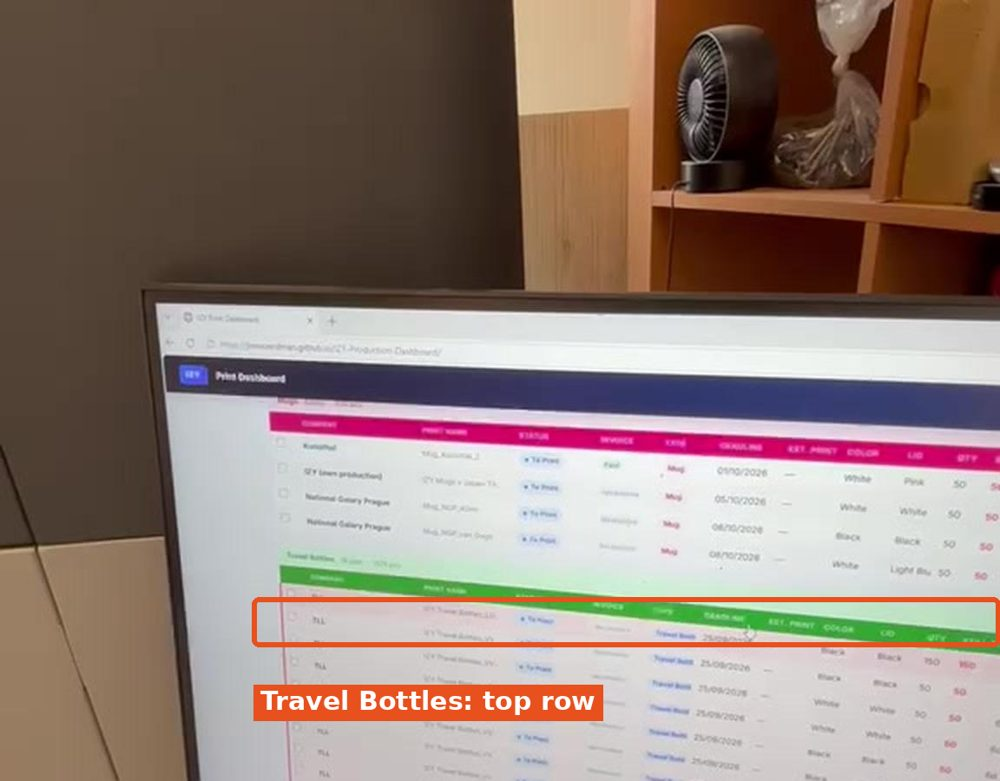
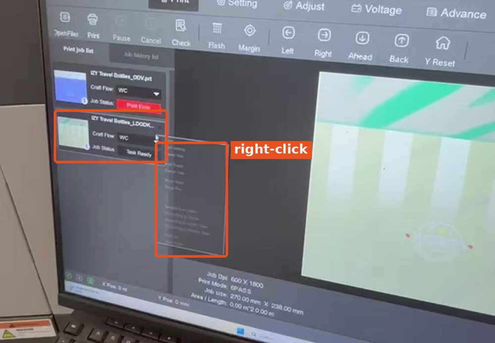
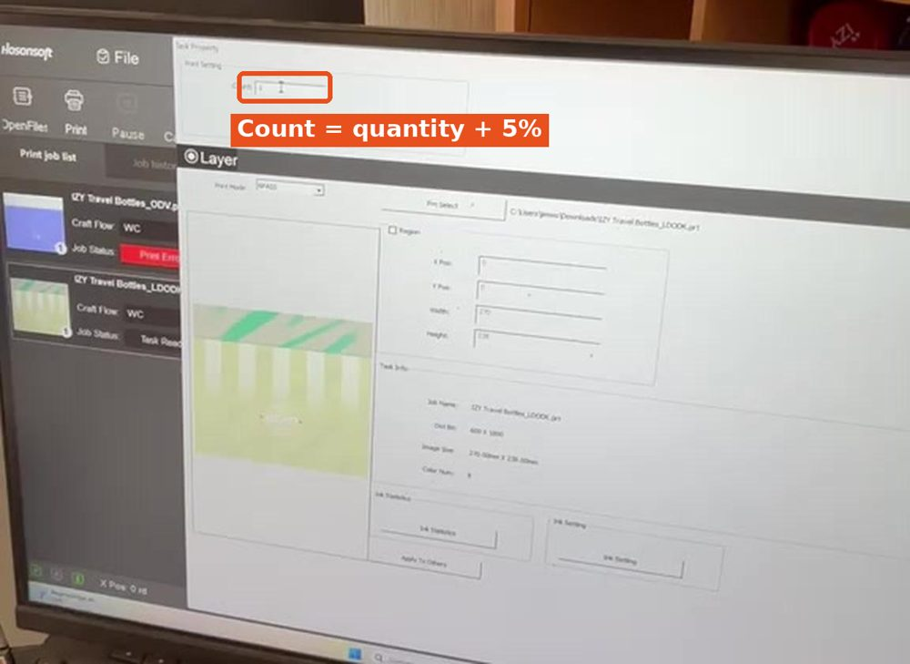
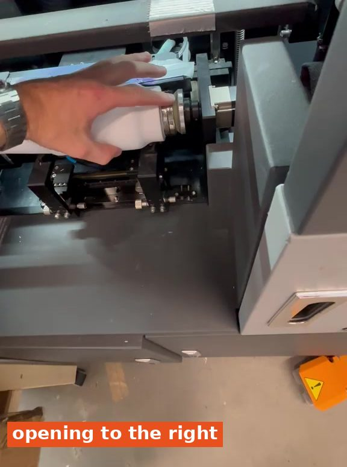

1
Check the print head temperature
- In PrintExp, go to the Voltage tab.
- Click Refresh at the bottom right.
- Check the Head Temp row: all heads must be at least 43 °C.
Below 43 °C?
Do not print yet. Wait a moment and click Refresh again.


How to operate the travel bottle printer and print an order. Do part 1: starting the printer first. The machine and PrintExp must be on.
You need: print dashboard (Microsoft Edge) · the blank bottles for the order · Print time: approx. 2 min per bottle
Do not print yet. Wait a moment and click Refresh again.



The order is 150 bottles, so you enter 155.






✓ Bottle done. Take it out, load the next bottle (step 5) and press Print start again.